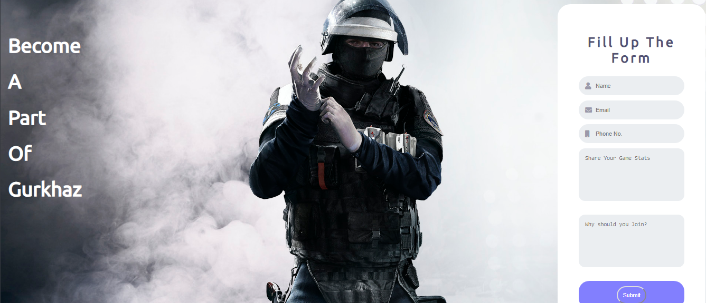

The idea for my clickable image link was originally obtained from Ausralis.gg page.

I learned the basic of css from the given video above.


By creating divs I was able to create Blog as well the main page.
I learned about the image slider from the given video above.

I learned the design for my blog as well as my research page from the video given above.

The idea for my contact us page was taken from the video given above.
